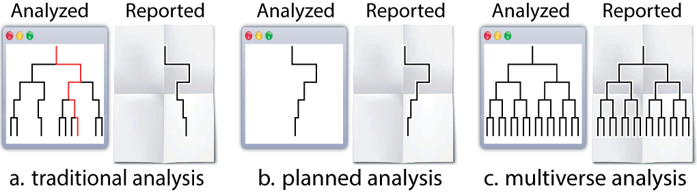
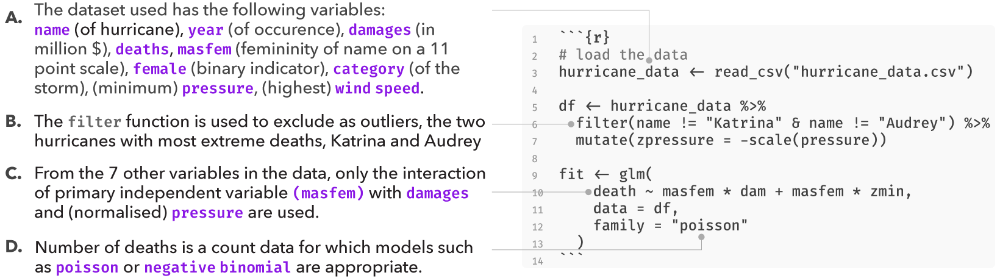
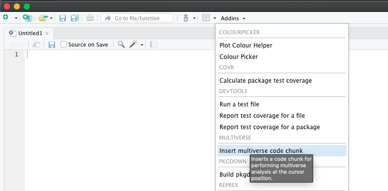
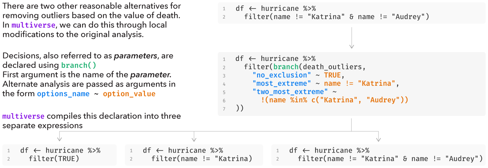

In any end-to-end analysis there likely exists points in the analysis where researchers have to make a decision between two or more equally defensible choices (e.g., different ways of excluding outliers, different data transformations). In a multiverse analysis, researchers identify all the possible decision points for an analysis, determine alternative analysis steps at each decision point, implements them all, and then report the outcomes of all analyses resulting from all possible choice combinations.
However, declaring several alternative analysis paths can be tricky, often requiring custom control flows such as nested for-loops and multiple if-else statements. The goal of multiverse is to allow users to create a multitude of end-to-end analyses in a concise and easily interpretable manner. multiverse enables this by providing both an embedded Domain-Specific Language (DSL) as well as an API to interact with and extract results from a multiverse analysis, which can then be neatly wrapped within a larger analysis in R.
For more background on what a multiverse analysis is, please refer to the works of Steegen et al., who first put forth the concept of multiverse analysis, and Simonsohn et al., who put forth a similar notion called the Specification curve analysis.
The multiverse documentation predominantly follows the tidyverse syntax.
Installation
You can install the package from CRAN:
install.packages("multiverse")To install the latest development version from GitHub, you can use these R commands:
install.packages("devtools")
devtools::install_github("mucollective/multiverse")Overview
In this document, we will provide you with details on how to quickly get started with this package. Please refer to the following vignettes for further information on:
- How
multiversecan be used in different environments such as in RMarkdown and RScripts. Seevignette("multiverse-in-rmd"). - How alternate analysis paths are declared in
multiverseusing branch, and howmultiverseprocesses the user-declared (multiverseDSL) code to create multiple end-to-end executable R analysis code. Seevignette("branch"). - How conditions and dependencies can be declared in
multiverse; conditions can be used to state when two steps in a multiverse are incompatible with one another. Seevignette("conditions"). - How multiverse results can be extracted and visualised. . See
vignette("visualising-multiverse").
We also implement a series of end-to-end multiverse implementations using this package to demonstrate how it might be used (which can be found in the package vignettes):
- Steegen et al.’s original multiverse analysis of the paper The fluctuating female vote: Politics, religion, and the ovulatory cycle; can also be found below.
- Simonsohn et al.’s specification curve analysis of the paper Female hurricanes are deadlier than male hurricanes
- Dragicevic et al.’s mini-paper Adding Inferential Information to plots using Resampling and Animations (from Increasing the transparency of research papers with explorable multiverse analyses )
- Dragicevic et al.’s mini-paper Re-evaluating the efficiency of Physical Visualisations (from Increasing the transparency of research papers with explorable multiverse analyses )
Example analysis
In this document, we outline an initial approach to conducting a multiverse analysis in R. We will show how our package can be used to perform the multiverse analysis outlined by Simohnsohn et al. in Specification Curve: Descriptive and Inferential Statistics on All Reasonable Specifications where they reanalysed the study titled Female hurricanes are deadlier than male hurricanes.
Before we dive into the analysis, it might be helpful to establish a terminology to help describe the steps that go into creating a multiverse analysis. We adopt the “tree of analysis” metaphor (see Figure below): “an analysis proceeds from top to bottom, and each branching represents a choice between different analysis options”.

In this terminology:
- a parameter represents a node in the tree that has more than one child—a point in the analysis where the analyst must decide between reasonable alternatives
- an option is one of those children.
- A singular analysis (i.e. universe) is a complete path from the root to a leaf.
Background: The Data
The dataset used by Jung et al., in their study Female hurricanes are deadlier than male hurricanes, contained information on 94 hurricanes from a list published by National Oceanic and Atmospheric Administration (NOAA). For each storm, the authors compiled information on the year (year), number of deaths (deaths), minimum pressure (pressure), maximum wind speed at time of landfall (wind), dollar amount of property damages (damage) and hurricane severity or category of the storm (category). Nine independent coders were asked to rate the names of the hurricanes on a two-item 11-point scale (1 = more masculine; 11 = more feminine), and the femininity of each name was computed as the mean of these two items.
We first load the raw data and store it as a tibble. The data is provided with the package and can be loaded using the data("hurricane) command.
data("hurricane")
hurricane_data <- hurricane %>%
# rename some variables
rename(
year = Year,
name = Name,
dam = NDAM,
death = alldeaths,
female = Gender_MF,
masfem = MasFem,
category = Category,
pressure = Minpressure_Updated_2014,
wind = HighestWindSpeed
) %>%
# create new variables
# which are relevant later on
mutate(
post = ifelse(year>1979, 1, 0),
zcat = as.numeric(scale(category)),
zpressure = -scale(pressure),
zwind = as.numeric(scale(wind)),
z3 = as.numeric((zpressure + zcat + zwind) / 3)
)The data look like this:
hurricane_data %>%
head()
#> year name masfem MinPressure_before pressure female category death wind
#> 1 1950 Easy 5.40625 958 960 0 3 2 125
#> 2 1950 King 1.59375 955 955 0 4 4 134
#> 3 1952 Able 2.96875 985 985 0 1 3 125
#> 4 1953 Barbara 8.62500 987 987 1 1 1 75
#> 5 1953 Florence 7.87500 985 985 1 1 0 115
#> 6 1954 Carol 8.53125 960 960 1 3 60 115
#> dam Elapsed.Yrs Source post zcat zpressure zwind z3
#> 1 2380 63 MWR 0 0.8281862 0.2017975 -0.02006244 0.3366404
#> 2 7220 63 MWR 0 1.7661320 0.4513891 0.27257241 0.8300312
#> 3 210 61 MWR 0 -1.0477054 -1.0461607 -0.02006244 -0.7046428
#> 4 78 60 MWR 0 -1.0477054 -1.1459973 -1.64581157 -1.2798381
#> 5 21 60 MWR 0 -1.0477054 -1.0461607 -0.34521226 -0.8130261
#> 6 24962 59 MWR 0 0.8281862 0.2017975 -0.34521226 0.2282571A single data set analysis: one possible analysis among many
The original analysis removed the two hurricanes with the highest death toll as outliers. To test their hypothesis that hurricanes with more feminine names result in more deaths, the authors fit a negative binomial model using the number of deaths as the response variable (due to some issues with implementing the negative binomial model in R, we approximate it by fitting a poisson model instead). For predictors, they use femininity, damages, standardised value of pressure (zpressure), interaction between femininity and damages, and the interaction between femininity and zpressure.
The following code block contains the steps involved in implementing the original analysis:
df.filtered = hurricane_data %>%
filter(name != "Katrina" & name != "Audrey") %>%
mutate(zpressure = -scale(pressure))
fit = glm(
death ~ masfem * dam + masfem * zpressure,
data = df.filtered,
family = "poisson"
)The result below indicates that there is a small but positive effect of masfem (femininity of the name of a hurricane) on deaths, when controlled for damages. This appears to support the original hypothesis.
tidy(fit) %>%
filter(term != "(Intercept)") %>%
ggplot() +
geom_vline(xintercept = 0, color = "red") +
geom_pointinterval(aes(x = estimate, y = term, xmin = estimate + qnorm(0.025)*std.error, xmax = estimate + qnorm(0.975)*std.error)) +
theme_minimal()However, the original analysis involved at least four analysis decisions (A-D), and at each decision point (node) alternative choices may have led to a different result. These decisions are highlighted in the figure below:

Several subsequent studies, each proposing a different analysis strategy, found no presence of such an effect, suggesting that the original finding may have been a result of a idiosyncratic combination of analysis choices. Data analysis can often involve several decisions involving two or more options. In most statistical analysis, these decisions are taken by the researcher based on some reasonable justification. However, for several decisions, there can be more than one reasonable option to choose from. A multiverse analysis makes all such decisions explicit and conducts the complete analysis for all combinations of options (of each decision). Below, we use this analysis as an example of how a single analysis can be extended to a multiverse analysis.
Multiverse specification
multiverse provides flexible functions which can be used to easily multiplex over alternative analysis steps, and perform a multiverse analysis. To describe both the features of multiverse and to sketch out how an analyst might progressively create a multiverse from the bottom up, we describe how to modify the traditional, single-universe analysis from the previous figure in to a multiverse analysis.
The first step is to load the library and define a new multiverse, which is the variable M. We will use this multiverse object to create a set of universes, each representing a different way of analysing our data.
#load the library
library(multiverse)
#create multiverse object
M = multiverse()Two ways to building a multiverse
Through the multiverse DSL, users are specifying multiple analysis paths at the same time. The DSL cannot be executed directly in an R environment or R code chunk and needs to be declared, processed and executed in a special environment. To be more precise, multiverse takes the user declared code, parses and rewrites the code into multiple versions of valid R code, each corresponding to an unique analysis path in the multiverse. For more information on this processing step, see vignette(branch)
To get around these limitations, we need to declare this (multiverse DSL) code “inside a multiverse object”. The multiverse package facilitates this through some boilerplate code:
- multiverse code chunks: allows users to declare multiverse code in a dedicated code chunk, and is more consistent with the interactive programming interface of RStudio.
- the
inside()function: allows users to declare multiverse code in RScripts (or within regular R code blocks).
Note that the inside function is more suited for a script-style implementation. When using the interactive programming interface of RStudio, user should use multiverse code chunks.
Multiverse code blocks
RMarkdown supports languages other than R and these languages have dedicated code blocks. We extend this by providing multiverse code blocks which can be used instead of the regular r code block to write code inside a multiverse object (see for more details on using the multiverse code blocks with RMarkdown). A multiverse code block is a custom engine designed to work with the multiverse package, to implement the multiverse analyses. This allows you to write more concise code and is more consistent with the interactive programming interface of RStudio. Below we show how code can be implemented using the multiverse code block: (Note: if you are using an RScript or the R console, please skip to the next section as executing the code below will throw an error)
```{multiverse default-m-1, inside = M}
# here we just create the variable `df` in the multiverse
df = hurricane_data
# here, we perform a `filter` operation in the multiverse
df.filtered = df %>%
filter(branch(death_outliers,
"no_exclusion" ~ TRUE,
"most_extreme" ~ name != "Katrina",
"two_most_extreme" ~ !(name %in% c("Katrina", "Audrey"))
))
```The code within the filter function call is written in the multiverse DSL and cannot be executed directly in R. For now, ignore what the branch function does as we will discuss about this in more detail in the next section. When this code is written and executed inside a multiverse code block, it allows the multiverse library to process and compile it to three different analyses.
We provide the ability to declare multiverse code block as an AddIn in RStudio. Users can click on AddIns toolbar menu in RStudio (see the image below). This would create a multiverse code block at the location of the cursor in the document.

Alternately, users can insert a multiverse code block using a keyboard shortcut. Users can create a keyboard shortcut to declare a multiverse code block inside a RMarkdown document through the following steps:
- Tools > Addins > Browse Addins… > Keyboard Shortcuts
- Next, in the filter input field, type multiverse. You will see one result with “Insert multiverse code chunk” as the name.
- Click on the Shortcut field and press Cmd+Option+M (on Mac OS) or Ctrl+Shift+Alt+M (on Windows).
- Click “Apply” and exit the dialog box
Please refer to for more details on using the multiverse code blocks with RMarkdown. The vignette also contains information on steps for debugging some of the common problems in assigning keyboard shortcuts.
inside()
Alternatively, when working with RScripts (or in a regular r code block), users can make use of the inside() function to write code inside a multiverse object. inside() takes in two arguments:
- the multiverse object, M; and
- the code for the analysis (including branches). Note that if you are passing multiple expressions, they should be enclosed within
{}.
Note that inside() is primarily designed for script style programming. If a user is working with an RScript, the previous code can be declared “inside the multiverse object” using the inside() function as follows:
# here we just create the variable `df` in the multiverse
inside(M, df = hurricane_data)
# here, we perform two `mutate` operations in the multiverse.
# although they could have been chained, this illustrates
# how multiple variables can be declared together using the `{}`
inside(M, {
df.filtered = df %>%
filter(branch(death_outliers,
"no_exclusion" ~ TRUE,
"most_extreme" ~ name != "Katrina",
"two_most_extreme" ~ !(name %in% c("Katrina", "Audrey"))
))
})In the rest of this vignette, we will use multiverse code blocks to specify the multiverse. Please refer to the vignette (vignette("multiverse-in-rmd")) for more details on declaring multiverse analyses in both RMarkdown and RScripts
Declaring alternative analysis
After you’ve specified the appropriate boilerplate which is necessary to use the multiverse DSL, the next step is to define our possible alternate analysis paths. The multiverse package includes functions that aim to make it easy to declare multiple alternate choices at each analysis decision point. We do this by enabling analysts to declare code using syntax which is as close to that of a single universe analysis as possible. Consider these first few lines from the transformation code in the single analysis above:
df.filtered = hurricane_data %>%
filter(name != "Katrina" & name != "Audrey")Here, the researchers are faced with the decision of which hurricanes to exclude as outliers. They decide to exclude the two hurricanes which have caused the most deaths. However, this decision is arbitrary. Why not include all hurricanes? Why not exclude only the one with most deaths? Thus we could have three possible ways of removing outliers based on extreme number of deaths:
- No exclusion
- Remove one most extreme hurricane
- Remove two most extreme hurricanes
To create a multiverse that includes these three possible analysis options, we use the branch() function. The branch() function accepts three or more arguments. The first argument defines a parameter (here death outliers). The subsequent arguments, which we refer to as options, define the different choices that a researcher can make at that decision node of their analysis; these follow the syntax <option_name> ~ <option_definition>. The <option_name> part is intended to allow naming the branches with meaningful names to help the user keep track of declared options (in the multiverse specification below, “no_exclusion”, “most_extreme”, “two_most_extreme” are used as option names). However, names can be omitted; if omitted, the entire syntax for performing that operation will be treated as the name for that particular option.
Putting it all together, a decision point in a multiverse analysis can thus be declared as:
```{multiverse branch_definition, inside = M}
# here we just create the variable `df` in the multiverse
df = hurricane_data
# here, we perform a `filter` operation in the multiverse
df.filtered = df %>%
filter(branch(death_outliers,
"no_exclusion" ~ TRUE,
"most_extreme" ~ name != "Katrina",
"two_most_extreme" ~ !(name %in% c("Katrina", "Audrey"))
))
```The multiverse library then takes this user-declared syntax in the multiverse DSL and and compiles it into three separate, executable R expressions as shown in the figure below:

More details on the branch() function can be found in the corresponding vignette(branch).
Interfacing with the multiverse
Once you add the code to the multiverse, it automatically processes the code to identify the parameters and the corresponding options that have been defined for each parameter.
Once the code has been added, the multiverse object will have the following attributes:
-
parameters, which is a list of parameters
parameters(M)
#> $death_outliers
#> $death_outliers[[1]]
#> [1] "no_exclusion"
#>
#> $death_outliers[[2]]
#> [1] "most_extreme"
#>
#> $death_outliers[[3]]
#> [1] "two_most_extreme"conditions, which is a list of conditions (we’ll define this later)expandreturns a table where each row corresponds to a single analysis path (i.e., a single universe). This view provides the user with the information of which choices have resulted in the analysis path, along with the entire unevaluated code expression corresponding to each analysis. Analysts can use this table to explore multiverse specifications with all the tools available in R and RStudio for exploring data tables.
expand(M)
#> # A tibble: 3 × 6
#> .universe death_outliers .parameter_assignment .code .results .errors
#> <int> <chr> <list> <list> <list> <list>
#> 1 1 no_exclusion <named list [1]> <named list> <env> <lgl>
#> 2 2 most_extreme <named list [1]> <named list> <env> <lgl>
#> 3 3 two_most_extreme <named list [1]> <named list> <env> <lgl>-
code, which is the code that the user passes to the multiverse to conduct a multiverse analysis. However, we do not execute this code and it is stored unevaluated. The user can interactively edit and rewrite this code, and can execute it for the current analysis or the entire multiverse using dedicated functions.
code(M)
#> $branch_definition
#> {
#> df = hurricane_data
#> df.filtered = df %>% filter(branch(death_outliers, "no_exclusion" ~
#> TRUE, "most_extreme" ~ name != "Katrina", "two_most_extreme" ~
#> !(name %in% c("Katrina", "Audrey"))))
#> }-
extract_variables(M, <variable names>)extracts the supplied variable from the results of each analysis path, returning a table similar to the output ofexpand(M), but with new columns for each variable that has been extracted. This would allow an analyst to, for example, extract summary statistics or even entire data tables from all universes simultaneously. These columns can easily be turned into long format data tables using thetidyversepackages and then visualized using theggplot2package
extract_variables(M, df.filtered)
#> # A tibble: 3 × 7
#> .universe death_outliers .parameter_a…¹ .code .resu…² .errors df.fi…³
#> <int> <chr> <list> <list> <list> <list> <list>
#> 1 1 no_exclusion <named list> <named list> <env> <lgl> <df>
#> 2 2 most_extreme <named list> <named list> <env> <lgl> <df>
#> 3 3 two_most_extreme <named list> <named list> <env> <lgl> <df>
#> # … with abbreviated variable names ¹.parameter_assignment, ².results,
#> # ³df.filteredBuilding up a complete analysis
Subsequent branch calls will progressively expand the multiverse, by enumerating all possible combinations. We will now expand our multiverse to include other possible decision points in the analysis where reasonable alternatives could have been chosen. For instance, the researchers could have:
- used a binary indicator for whether a hurricane’s name was female, instead of the 11-point rating of how feminine the name of a hurricane was
- log transformed the
damagevariable, as it is a positive only value with a long right-tail
This would result in 3 × 2 × 2 = 12 analysis paths.
```{multiverse label = variable_definitions, inside = M}
df.filtered <- df.filtered %>%
mutate(
femininity = branch(femininity_calculation,
"masfem" ~ masfem,
"female" ~ female
),
damage = branch(damage_transform,
"no_transform" ~ identity(dam),
"log_transform" ~ log(dam)
)
)
```The next step in this multiverse analysis is to estimate the effect of femininity on deaths using linear regression. There are multiple decisions involved at this step. We take this opportunity to introduce certain scenarios that an analyst may encounter while attempting to create a multiverse, that may be difficult to discover but are supported by the library.
Reusing analysis parameters in branch()
One way of implementing this regression analysis may be a poisson model with the number of deaths caused by the hurricane as the response variable. Recall that this is specified as:
fit = glm(death ~ masfem * dam + masfem * zpressure, data = df.filtered, family = "poisson")Although this is a reasonable choice for count data, one can also argue for a log-linear regression model instead, as count data such as deaths tend to be approximately log-normally distributed.
Specifying this in a multiverse analysis may require changes in two different locations in the code: the specification of the deaths dependent variable and the value of the family argument. However, these are not two separate decisions, but rather a consequence of the same analysis parameter: the choice of model. Often, a single analysis parameter will require the analyst to change the code in more than one location. To represent these semantics, multiverse allows us to re-use the same analysis parameter in multiple branch() statements, so long as each branch() uses the exact same set of analysis options. In a branch on a previously defined parameter, option names must be the same, but the code for each option can be different. Thus, we represent the consequences of the choice of model with a single analysis parameter: model. We insert two branch() statements using this parameter, one to set the variable transformation and one to set the family.
Specifying conditions in the multiverse analysis
Another decision that was made at this step was the choice of predictors, which includes the interaction between femininity and damage, and between femininity and zpressure. Here, the predictors damage and zpressure are used as measures of the storm severity, with the interaction between femininity and damage indicating whether the main effect is stronger in more “destructive” or “severe” storms. Yet again, there are other reasonable approaches to study the primary effect which may include no interaction term or only include interactions between femininity and variables such as pressure, wind or category in conjunction with the interaction between femininity and damage.
In a multiverse analysis, there may arise such dependencies between two or more analysis parameters that make certain analysis paths inconsistent, or even impossible. In other words, the applicability of some analysis options may be conditional on a previous, upstream decision. By default, multiverse assumes all combinations of options are valid. However, it provides a flexible way to specify that an analysis option is incompatible with previously-specified analysis options. These dependencies can be specified using the %when% operator followed by a boolean expression, right after the option name. Here, interaction term between femininity and zpressure only make sense in the presence of the interaction involving damage, so we use a %when% expression in the definition of the other_predictors analysis parameter.
This results in the following multiverse specification (for now, let’s ignore the previous decision on choice of models):
```{multiverse label = variable_definitions, inside = M}
fit <- glm(death ~
branch(main_interaction,
"no" ~ femininity + damage,
"yes" ~ femininity * damage
) + branch(other_predictors,
"none" ~ NULL,
"pressure" %when% (main_interaction == "yes") ~ femininity * zpressure,
"wind" %when% (main_interaction == "yes") ~ femininity * zwind,
"category" %when% (main_interaction == "yes") ~ femininity * zcat,
"all" %when% (main_interaction == "yes") ~ femininity * z3,
"all_no_interaction" %when% (main_interaction == "no") ~ z3
), family = "poisson", data = df)
```For more details on how this can be done, as well as other details on conditions, please refer to vignette(conditions).
Executing multiverse code
As with code chunks in a typical computational notebook, users can execute a multiverse code chunk in the interactive editor in RStudio. When a user executes a single code chunk, multiverse internally transforms the input from that code chunk into one unevaluated expression (R’s internal representation of an abstract syntax tree) for each unique combination of analysis options and immediately executes the default analysis: the analysis path obtained by taking the first analysis option at each decision point. The default analysis is executed in the current active R environment (i.e. the same environment that regular R code blocks are executed in — the R Global Environment). Thus, the result of the default analysis is always accessible to the user. The output of an executed code chunk (text or visualisation) is displayed immediately below it, mimicking notebook code chunks
```{multiverse label = default-m-3, inside = M}
fit = glm(branch(model, "linear" ~ log(death + 1), "poisson" ~ death) ~
branch(main_interaction,
"no" ~ femininity + damage,
"yes" ~ femininity * damage
) + branch(other_predictors,
"none" ~ NULL,
"pressure" %when% (main_interaction == "yes") ~ femininity * zpressure,
"wind" %when% (main_interaction == "yes") ~ femininity * zwind,
"category" %when% (main_interaction == "yes") ~ femininity * zcat,
"all" %when% (main_interaction == "yes") ~ femininity * z3,
"all_no_interaction" %when% (main_interaction == "no") ~ z3
) + branch(covariates, "1" ~ NULL, "2" ~ year:damage, "3" ~ post:damage),
family = branch(model, "linear" ~ "gaussian", "poisson" ~ "poisson"),
data = df)
```The following code chunk illustrates this behavior. Even though the variable fit was defined in a multiverse code block, since the default analysis is executed in the active R environment, the version corresponding to the default analysis can be accessed directly in R:
broom::tidy(fit)
#> # A tibble: 6 × 5
#> term estimate std.error statistic p.value
#> <chr> <dbl> <dbl> <dbl> <dbl>
#> 1 (Intercept) 2.10 0.0918 22.9 1.12e-115
#> 2 masfem 0.0465 0.0123 3.77 1.63e- 4
#> 3 dam 0.0000195 0.00000338 5.77 8.10e- 9
#> 4 zpressure 0.144 0.106 1.35 1.76e- 1
#> 5 masfem:dam 0.00000110 0.000000421 2.61 8.94e- 3
#> 6 masfem:zpressure 0.0266 0.0132 2.02 4.33e- 2Analysts can change which analysis path is executed by default. Inline code output of a single analysis path (and the ability to select that path) is meant to support the familiar trial and error workflow of data analysts and to aid debugging.
Executing the entire multiverse
To execute all unique analysis paths in the multiverse, an analyst can call execute_multiverse(M). We support local parallelisation with an optional cores argument indicating the number of cpu cores to use. The multiverse object can also be easily adapted to use with existing parallel computing packages in R, such as future, to run analyses across computing clusters.
Debugging and Diagnosing Errors
For the default analysis, as it executes in the R environment, users have access to the same set of debugging utilities that R provides. When the user executes the entire multiverse, the library outputs the error message, a traceback—an object containing the entire call stack that caused the error—and the index of the corresponding analysis path in which the error was encountered. The execution of the remaining analysis paths in the multiverse are not halted if any errors are encountered. The traceback is helpful to identify the location of the error, as often R expressions return unidentifiable error messages. execute_universe(<universe ID>) (universe ID are found in the table output by expand(), see below) allows analysts to execute a particular analysis path and reproduce errors encountered in the execution of that specific path.

Conclusion
In this document, we covered details to help you quickly get started with this package. Please refer to the following vignettes for further information on:
- How
multiversecan be used in different environments such as in RMarkdown and RScripts. Seevignette("multiverse-in-rmd"). - How alternate analysis paths are declared in
multiverseusing branch, and howmultiverseprocesses the user-declared (multiverseDSL) code to create multiple end-to-end executable R analysis code. Seevignette("branch"). - How conditions and dependencies can be declared in
multiverse; conditions can be used to state when two steps in a multiverse are incompatible with one another. Seevignette("conditions"). - How multiverse results can be extracted and visualised. . See
vignette("visualising-multiverse").
We also implement a series of other end-to-end multiverse implementations using this package to demonstrate how it might be used:
- Simonsohn et al.’s specification curve analysis of the paper Female hurricanes are deadlier than male hurricanes
- Dragicevic et al.’s mini-paper Adding Inferential Information to plots using Resampling and Animations (from Increasing the transparency of research papers with explorable multiverse analyses )
- Dragicevic et al.’s mini-paper Re-evaluating the efficiency of Physical Visualisations (from Increasing the transparency of research papers with explorable multiverse analyses )